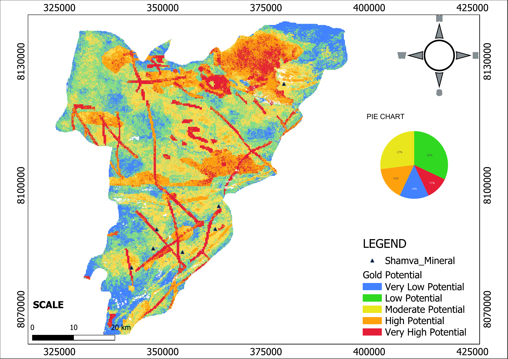

MINERAL EXPLORATION
Gold Mineralisation Prospectivity Mapping
GIS and remote sensing integration for mapping areas with different levels of potential for gold mineralisation in Shamva District, Zimbabwe.
GIS
Remote Sensing
QGIS
Google Earth Engine
VIEW PROJECT →